来源：https://kiu0yi118yj.feishu.cn/docx/GQFZdMA6AobWeYxCWshclun8nGf
该拆解项目应该源自1.12圈友半阙酒的一条中标风向标：
小红书野生手作博主，主打原创手工，卖小南红绿松石新年国风饰品，包含项链，手链，戒指等
其中销量最高的的项链单价288，售出4884件，销售量140W+，手链单价188，售出3057件，销售量57W+
在多多搜了一家类似主打小南红绿松石的店铺，人家一件类似的手链才15.8，差了一颗绿松石，这就是188和15.8的区别
至于1688批发这种珠子价格多少，已经不用多说了。
新年在即，大家都想要个好兆头，柿柿如意是个每年都火的主题，小南红手链高级好看，柿子红恰好契合这个主题，果然卖爆了。
这位博主的另一款超高销售量项链，一梦入敦煌，也是契合了近年来大火的敦煌风格，单价189，售出了8042件，销售量151W+。
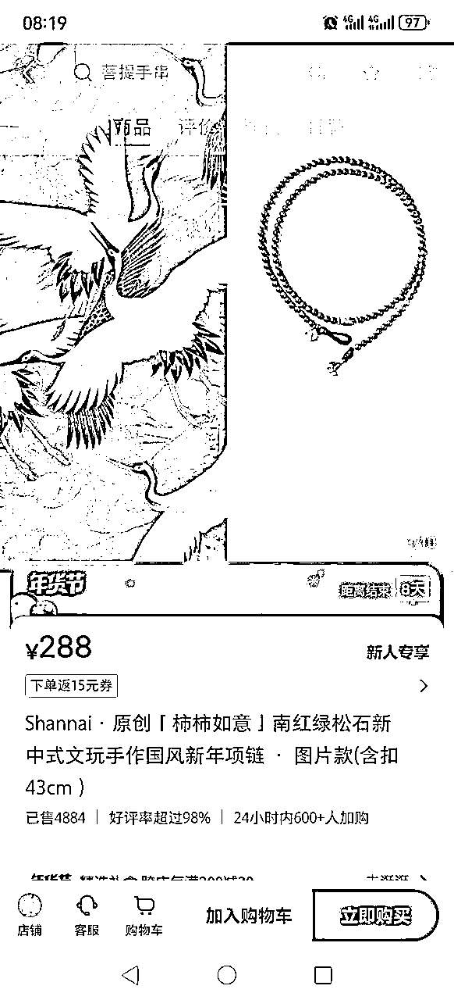
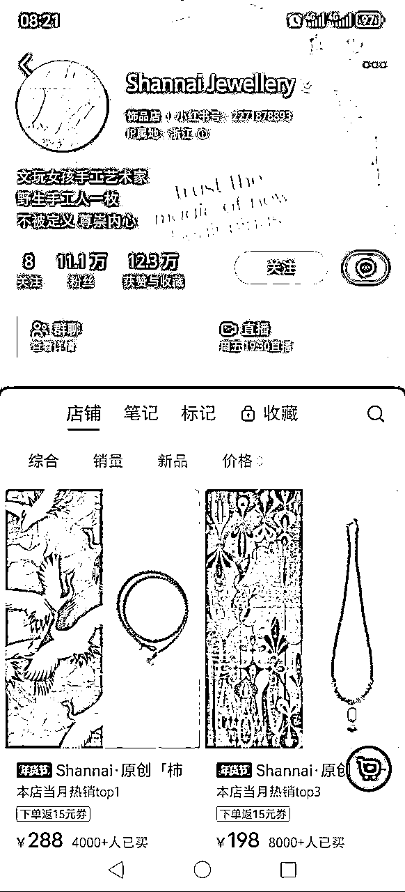
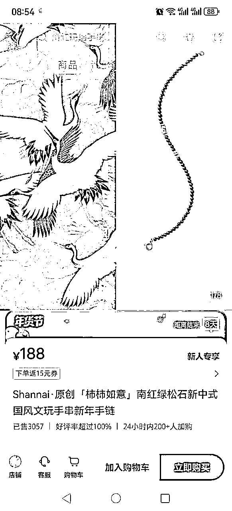
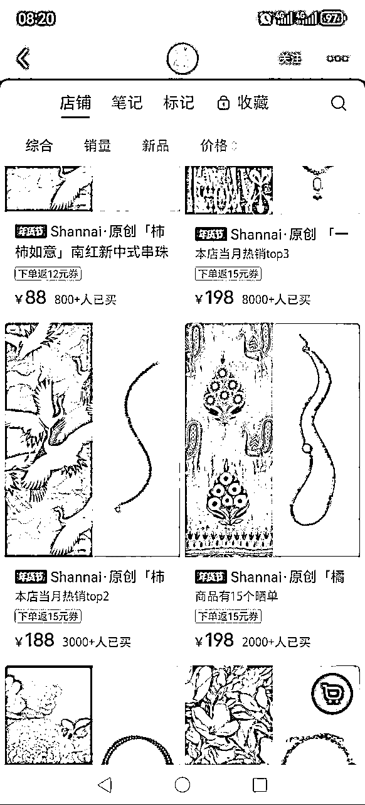
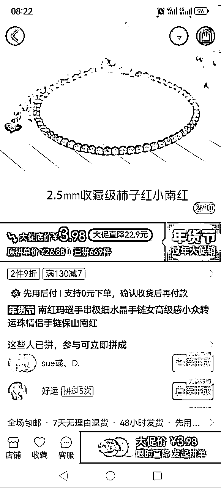
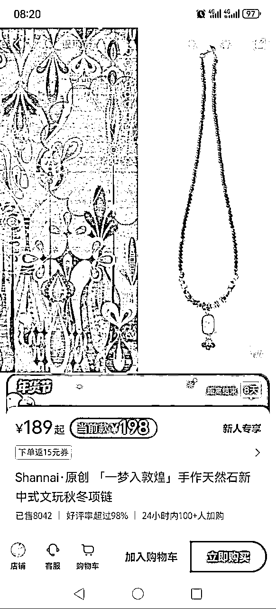
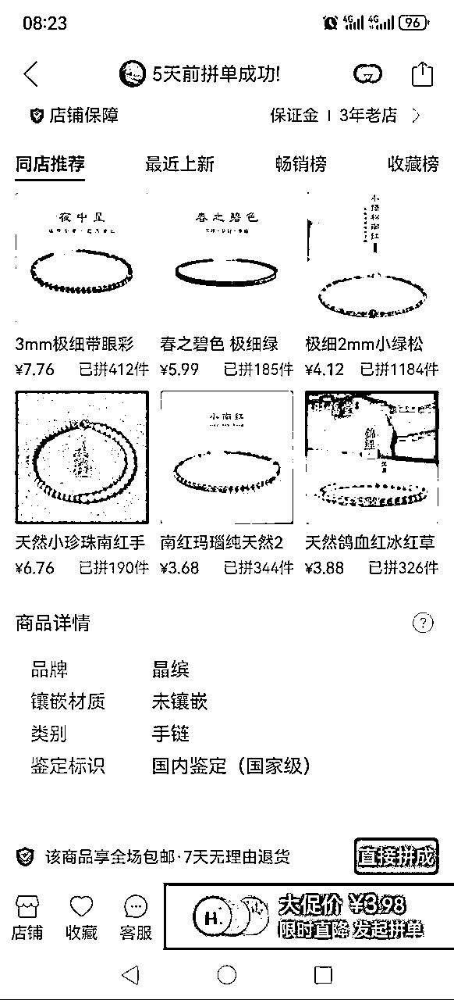
同样的手串，在小红书打上原创手作的标签就可以溢价十倍甚至以上进行售卖且销量惊人，利润空间巨大。
“摆烂”和“躺平”是近年来中国社会中流行的一种生活态度，反映了一部分人对于职场压力和生活快节奏的疲惫感。这种心态的兴起使得迷信、祈福等与心灵安宁相关的主题在小红书上成为热门。以下是从这个角度分析小红书上手作饰品流行的原因：
总体而言，小红书上手作饰品流行的原因与当前社会心理状态和文化趋势密切相关。这些手作饰品不仅是一种装饰，更是一种情感的寄托和对抗压力的方式。
本篇文章就以雍和宫手串、灵隐十八子以及原创手作为例，盘点小红书高销量的手作饰品运转逻辑。
雍和宫手串近一年在小红书的相关笔记就有1W+，从北京旅游攻略到雍和宫请手串攻略以及代请代卖相关手串的内容应有尽有，有巨大的浏览量和话题度，雍和宫手串单价高，不同款式价格从200+到1000+不等，在小红书上运营销售雍和宫手串相关饰品主要有二种模式：
一、代请
从北京雍和宫法物流通处代请：https://www.yonghegong.cn/2017-01/05/content_40045052.htm
相当于代购，赚个跑腿费和快递费，有真实的小票和防伪码，款式齐全且可以手串开光，有一定的“开光”加持。
通过在小红书上展示各类手串图片，打上雍和宫手串的标签，然后在评论区及各个入口引流到私域微信成交。单笔利润在50-200不等
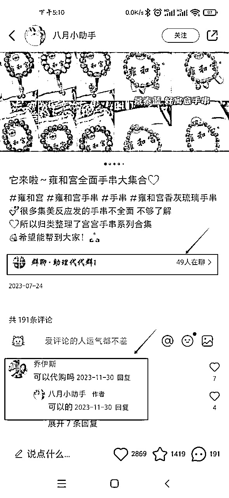
二、售卖雍和宫手串同款
售卖雍和宫爆款手串同款，部分甚至能提供同款雍和宫手提袋和防伪卡，主打一个性价比，但是真假难辨，鱼龙混杂。
相对于代请，这部分创作者可以直接在小红书上开店，上架各种款式的手串进行售卖，甚至可以直播。
但是销量一般，绝大部分都是个位数销量。
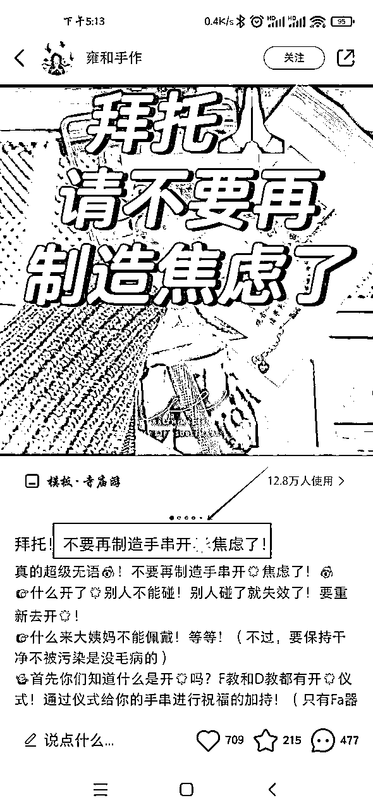
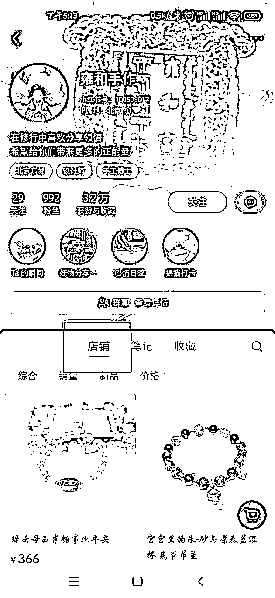
灵隐十八籽在小红书上过去一年的笔记数量是6000+，没有雍和宫手串知名度高，虽然灵隐十八籽和雍和宫手串类似，主打十八种不同珠石串成手串，赋予其一定的寓意，但与雍和宫手串不同的是没有防伪措施和垄断的销售渠道，不光灵隐寺有卖十八籽，周边商家各种文创店都有卖。另一方面，灵隐十八籽在灵隐寺销售单价46，相对于雍和宫手串来说售价低了不少，相较雍和宫手串少了一点价值上的话题度。
在小红书上销售灵隐十八籽也是主要两种模式：
一、代请
同类似代购，主打一个帮忙开香的正品，必要时可以配上当天的门票票根及视频，杭州本地发货。一般引流到私域成交。
每单大概30-100的利润。
二、同款及周边
来源周边文创店或者义乌小商品市场，款式多性价比高，或以代请为名但无代请承诺。一般直接在小红书开店销售。单笔利润在几十上百。
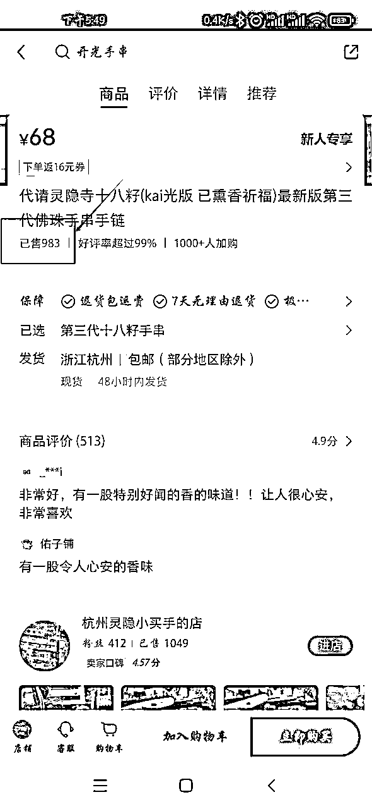
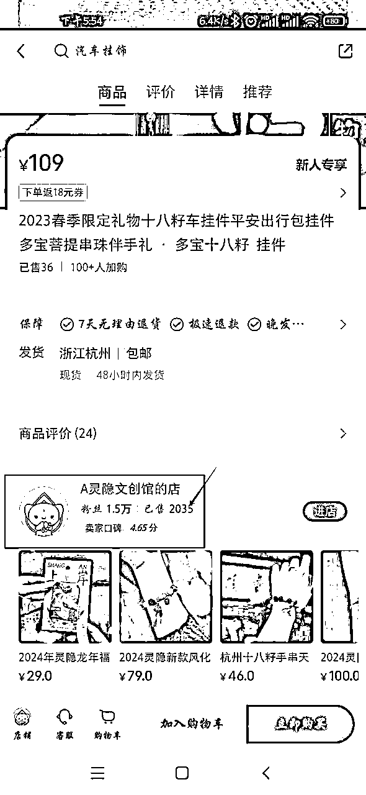
以风向标店铺为例，没有雍和宫手串或灵隐十八籽这类大ip加持，就以原创手作为名，设计有足够寓意和辨识度的主题，如“柿柿如意”、“一梦入敦煌”，可以有效提高客单价。每单溢价十倍甚至数十倍。
具体运转逻辑如下：
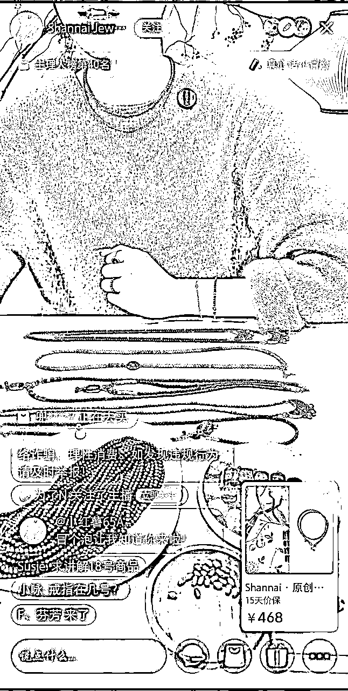
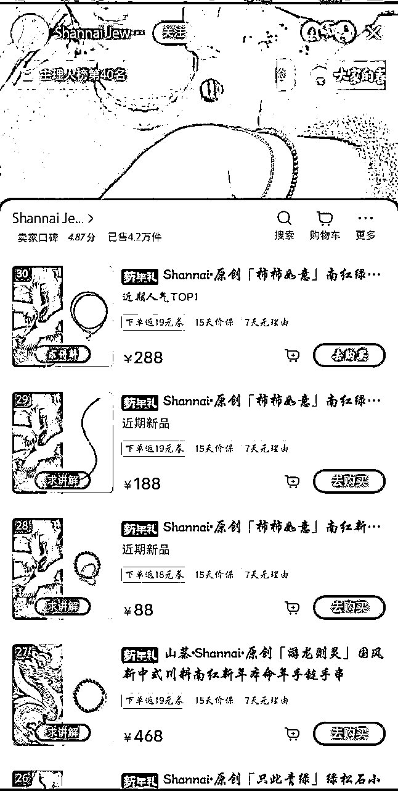
总之，要想在小红书上实现手作饰品的热销，不仅需要有优质的产品和独特的设计理念，还需要一套有效的运转逻辑来支持整个销售过程。从账号定位到内容创作，再到目标受众的精准营销，每一步都需要精心策划和执行。只有这样，才能在这个竞争激烈的市场中脱颖而出，实现高销量。